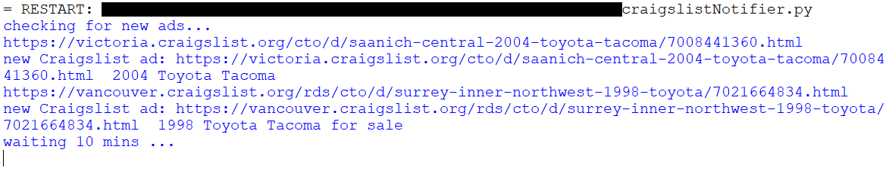
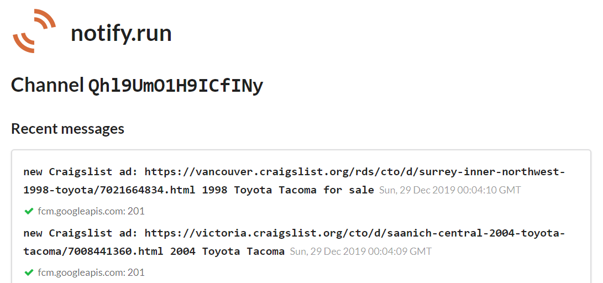

Scrapes craigslist for ads that match a given search and notifies you
when a new ad is posted.
It uses beautifulSoup to scrape Craigslist for ads matching a given search
criteria, and notify to send notifications to the user.
The section of code shown below looks for the ads on the page, and creates
an array containing the URLs and titles of each ad.
The program will then compare the URLs from that arry with those already stored in the existing_ads.txt file (if it doesn't exist, it will be created and left empty for now). If an ad is found that does not already exist in the existing_ads.txt file, then send notification via notify, and add that ad to the txt file. The code block shown below carries out this algorigthm.
Sample Run:
 